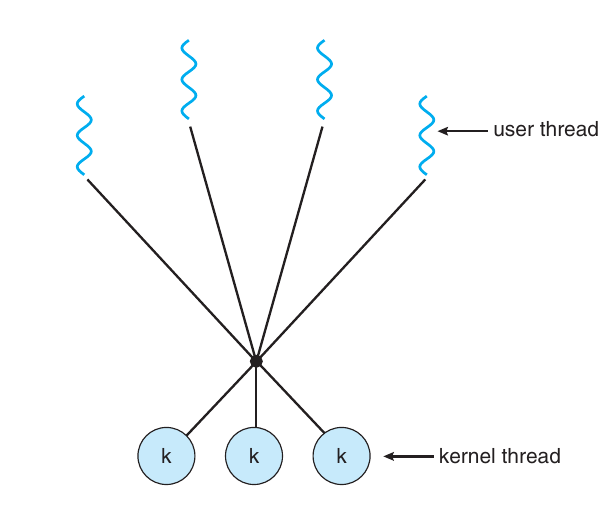

Thread
Benefits
- Responsiveness. Multithreading an interactive application may allow a program to continue running even if part of it is blocked or is performing a lengthy operation, thereby increasing responsiveness to the user.
- Resource sharing. Processes can only share resources through techniques such as shared memory and message passing.
- Economy. Allocating memory and resources for process creation is costly.
- Scalability. The benefits of multithreading can be even greater in a multiprocessor architecture, where threads may be running in parallel on different processing cores. A single-threaded process can run on only one processor, regardless how many are available. We explore this issue further in the following section.
Multithreading Models
Many-to-One Model

The many-to-one model maps many user-level threads to one kernel thread.
Thread management is done by the thread library in user space,so it is efficient. However, the entire
process will block if a thread makes a blocking system call. Also, because only one thread can access the kernel at a time, multiple threads are unable to run in parallel on multi-core systems.
One-to-One Model

Provide more concurrency than the many-to-one model by allowing another thread to run when a thread makes a blocking system call.
Allow multiple threads to run in parallel on multiprocessors.
Drawbacks: overhead of creating kernel threads can burden the performance of an application.
Many-to-Many Model
A balance between concurrency and developing.
Many-to-one model: easy to develop, bad concurrency.
One-to-one mode: great concurrency, hard to develop. Developers have to pay much attentions on how many system threads to create since the number of threads is strictly limited.
(In this model, the number of kernel threads is smaller than the number of user threads.)
CPU Scheduling
Concept of Scheduling
In a single-processor system, only one process can run at a time. Others must wait until the CPU is free and can be rescheduled. $\rightarrow$ Waste of time.
With multiprogramming, we try to use this time productively. Several processes are kept in memory at one time. When one process has to wait, the operating system takes the CPU away from that process and gives the CPU to another process.
Whenever the CPU becomes idle, the operating system must select one of the processes in the ready queue to be executed. The selection process is carried out by the short-term scheduler, or CPU scheduler. The scheduler selects a process from the processes in memory that are ready to execute and allocates the CPU to that process.
Preemptive or Non-preemptive
书中并没有很好的总结，中文描述更好理解：
- 可剥夺式(可抢占式Preemptive): 当有比正在运行的进程优先级更高的进程就绪时,系统可强行剥夺正在运行进程的CPU,提供给具有更高优先级的进程使用。
- 不可剥夺式(不可抢占式Non-preemptive ): 某一进程被调度运行后,除非由于它自身的原因不能运行,否则一直运行下去。
CPU-scheduling decisions may take place under the following four circumstances:
- When a process switches from the running state to the waiting state
- When a process switches from the running state to the ready state
- When a process switches from the waiting state to the ready state
- When a process terminates
When scheduling takes place only under circumstances 1 and 4, we say that the scheduling scheme is non-preemptive or cooperative. Otherwise,it is preemptive.